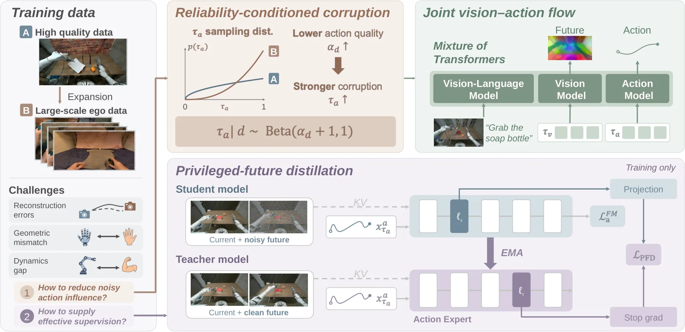
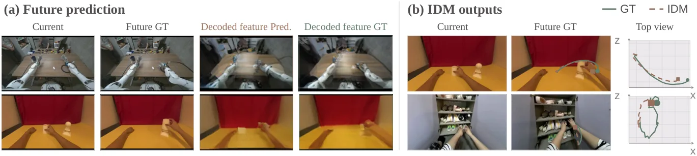
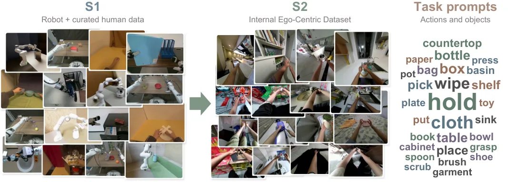
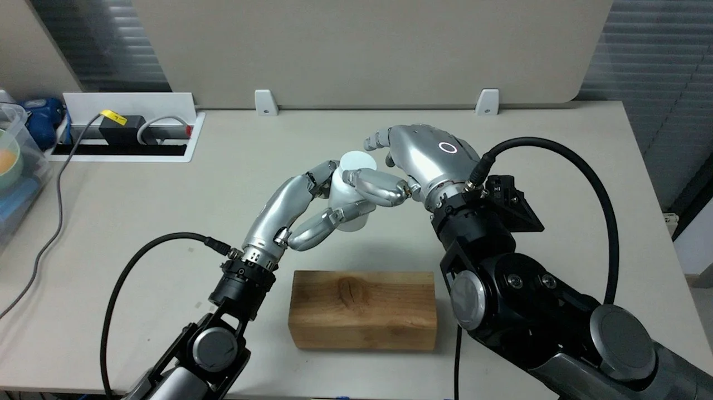
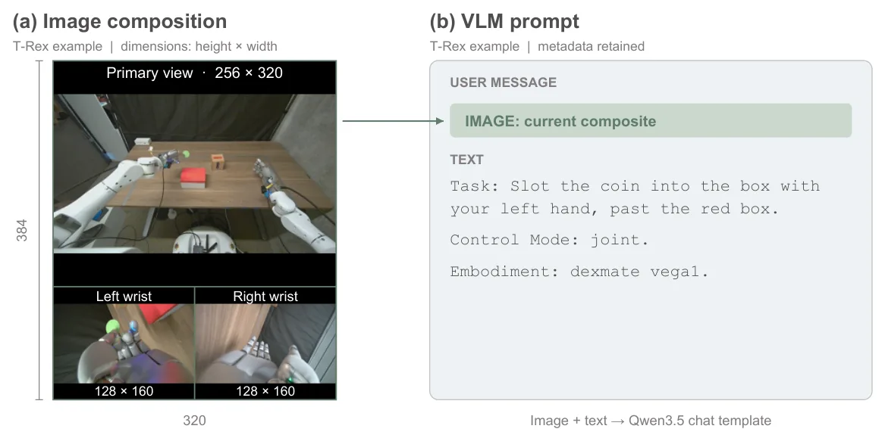
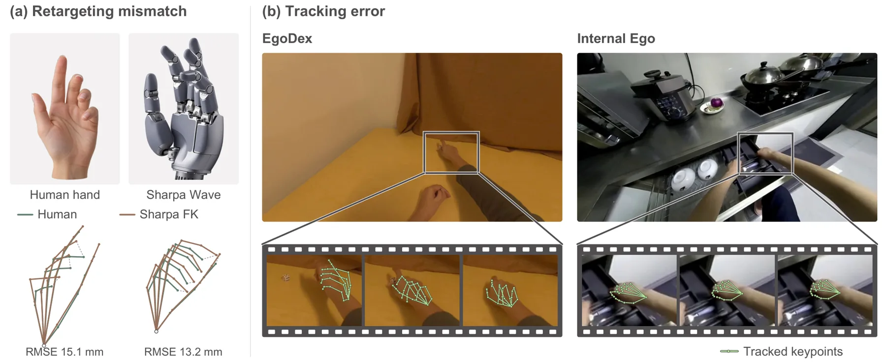

EgoForesight：用带噪第一视角动作有效扩展策略学习
EgoForesight: Effectively Scaling Policy Learning with Noisy Egocentric Actions
骨架是 Qwen3.5 系 4B 主干 + 耦合的视觉/动作专家，动作专家输出 30 步 chunk（130 维规范动作空间），视觉目标用冻结的 DINOv3。两个机制互补：源级可靠度 q_d 决定腐蚀强度与损失权重；EMA 教师从“当前帧 + 干净未来”学到的表征蒸馏进“当前帧 + 被腐蚀未来”的学生层。RoboCasa 100 demo/task 下 66.0% vs DIAL 58.3%（+7.7）；全量 73.9% vs 70.2%；把机器人示教减 90% 只掉 7.9 点，DIAL 掉 11.9 点。
few-shot success
vs DIAL
open-loop MSE
combined ablation
作者、单位与技术谱系 · Research context
作者与单位
研究脉络
- DIAL（主要对照基线）同任务基线关系：RoboCasa 上的直接对手，本文的 few-shot/全量/减数据三组对照都相对它计算。[论文 Table 1]
- EgoScale / EgoMimic 的第一视角路线数据路线前作关系：证明第一视角人类数据可用于大规模策略预训练与人-机联合训练，本文接的是“数据变多但标签变脏”这一步。[论文 §1]
- Self-Flow 的噪声偏移 EMA 教师训练组件关系：特权未来蒸馏沿用其 EMA 教师设计，改成条件 IDM 的角色（看当前 + 干净未来）。[论文 §3.3 / 附录]
单位与角色取自论文首页署名与 † 标注；基线数字来源差异来自论文 §4.3 的自述。论文未披露导师关系，此处不推断。
方法本质拆解 · What actually changed
是不是微调？
是从预训练主干出发的两阶段继续训练，不是纯微调：主干是 Qwen3.5 系 4B，S1 训练 100k 步建立视觉-动作对应，S2 再训练 200k 步扩展到大规模第一视角数据。视觉编码器（DINOv3）冻结作为目标提取器，耦合的视觉/动作专家与新增参数被训练。
有没有额外约束？
约束落在监督信号上：按源可靠度 q_d 决定动作标签的腐蚀强度，并用可靠度加权回归缩放各源损失；另有掩码 M_a 排除补齐坐标与无效时间步（130 维规范空间里未使用的槽位）。没有引入几何硬约束或运动学可行性约束，动作可行性靠数据与重定向质量保证。
推理/后端到底做了什么？
推理是单次前向：视觉与语言编码后，动作专家一次去噪出 30 步 chunk，去噪路径的视觉/动作时间步关系(τv=τa^1.5) 是可调的超参。没有在线优化、没有重规划、没有教师参与；教师只在训练时提供表征监督，推理时被丢弃。
方法本质是什么？
本质是把“标签有多脏”变成可微的监督权重，并把“动作对不对”的最终证据从标签转移到观测到的场景变化：教师看干净未来学到的表征，等于一个隐式的逆动力学信号，学生用它在含噪样本上对齐。它降低的是动作标签噪声带来的方差，不是模型容量或数据覆盖的不足。
输入多源（机器人示教 + 第一视角视频）观测与含噪动作标签；在损失层按源可靠度加权、在表征层用干净未来的教师蒸馏；输出 30 步动作 chunk，直接效果是同等数据下 few-shot 成功率高出 7.7 点。

桥接价值Bridge
桥接价值
“人类第一视角视频便宜、动作标签脏”是数据金字塔里最普遍的一层，本文不把它当数据清洗问题，而当成“标签噪声 + 互补监督”问题：按来源可靠度分配监督强度，同时用“结果”（场景变化）反过来约束表征。这与我们给不同传感器/不同质量观测分配权重、并用观测结果校验过程模型的结构完全同构，值得借的是监督分配的形式，而不是操作策略。
方法与模块Method
方法摘要
联合视觉-动作流：4B Qwen3.5 主干 + 耦合视觉/动作专家，动作专家预测 30 步动作 chunk（130 维规范空间，缺失维度掩码），视觉目标用冻结 DINOv3。机制一：reliability-conditioned corruption 按源可靠度 q_d 决定动作标签的腐蚀程度，并配合可靠度加权回归；机制二：EMA 教师接收当前帧与干净未来帧（条件 IDM），把深层表征蒸馏给接收被腐蚀未来帧的浅层学生。两阶段：S1 用高质量机器人 + 精选人类数据建立视觉-动作对应，S2 加入 2 万小时第一视角数据并启用两个机制，同时回放 S1 数据。
可迁移模块
第一是按来源可靠度的分级腐蚀与加权回归：把“这条观测有多可信”显式写成一个标量并作用到损失上，可直接用于我们视觉/预积分/GNSS 残差的加权。第二是“用未来观测做条件 IDM 蒸馏”：不需要额外标注，只要有一小段干净未来就能给含噪样本提供表征监督。第三是两阶段数据顺序（先高质量对齐、再大规模含噪，且旧数据在新阶段回放），这条经验对任何“先标定后扩展”的流程都适用。

证据Evidence
关键证据与数字
RoboCasa few-shot（100 demo/task）平均 66.0%，对比 DIAL robot-only 的 58.3%（+7.7）、DIAL+EgoDex 的 61.1%（+4.9）；全量（1000 demo/task）73.9% vs DIAL 70.2%（+3.7）。把机器人示教减 90%，EgoForesight 只掉 7.9 点，DIAL 掉 11.9 点。缩小规模消融：基线 52.0 → 仅可靠度 54.3 → 仅教师蒸馏 56.3 → 两者 58.6；30,000 小时预训练时开环动作 MSE 降 20.5%。后训练阶段把去噪路径改成 τv=τa^1.5 后，Art. 80.0 / PnP 71.9 / 平均 73.9%。
边界与下一步Limits & Next Step
边界与风险
作者自己注明：RoboCasa 的基线数字取自各自论文，预训练数据与优化预算不同，不是同预算重跑，因此 +7.7 这类差值只能当作方向性证据。可靠度是“源级”粗粒度：q_d=0.8/0.5/0.2 三档的平均成功率只差 0.3 点，说明机制对取值不敏感，但也说明它没有建模样本级噪声。附录 C.5 明确人-机形态差异带来的重定向失配仍在。预训练 22k H200 GPU-hours，复现成本高。
下一步实验
在我们自己的融合管线里做最小对照：给两类观测（例如视觉重投影残差与预积分残差）各设一个源级权重，比较固定权重、按可靠度加权、以及“可靠度 + 未来观测蒸馏”三组的位姿与尺度误差，只测下游几何指标。第二个实验只验证机制二：用下一帧观测做条件 IDM 蒸馏，看前端特征是否变好而无需额外标注；如果增益只在含噪数据上出现、在干净数据上退化，就要给它加一个“可靠度门控”才敢用。







